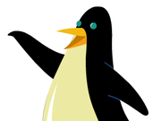

|
|
|---|---|
| Name | Oswald |
| Gender | Male |
| Species | Octopus |
| Speaking Voice |
Fred Savage |
| First Appearence |
"Rollerskating" |
Oswald is an American/British children's animated television series that originally aired on Nickelodeon as part of the Nick Jr. block. It ran for a single season of 26 episodes. It first aired on August 20, 2001 in the United States.The show was created by Dan Yaccarino and was co-produced by HIT Entertainment and Nickelodeon. It was also broadcast on Noggin and CBS (during the Nick Jr. on CBS block) in reruns. Oswald is known to say "Oh, my gosh!" on many occasions. He wears a life preserver when he is around water and loves Swizzleberry Swirl ice cream.A story of a blue octopus and his dog that looks like a hotdog, named Weenie, and their friends like Daisy the daisy, and Henry the penguin. They go on adventures in their town that usually involves a problem that needs to be solved.Oswald is a large, blue octopus who takes residence in an apartment complex located in Big City. He lives there along with many other animals, such as Henry the penguin and a turtle named Buster. Oswald will often play the piano while singing to his pet dog Weenie.
Like most pets, Weenie is loyal and affectionate. She keeps Oswald focused and prevents him from getting carried away with an idea or a scheme. Weenie loves to play with a Frisbee or her favorite ball of yarn. She has her special dish to eat from, her special blanket to snuggle in, and her special bed to sleep in. Weenie only communicates in "bark-speak," making one of her favorite activities howling along with Oswald as he plays on his piano. Weenie will stick with Oswald through thick or thin, and is a great companion to him.
Oswald's downstairs neighbor and best friend. Henry is a creature of habit in every way and usually shuns the idea of trying different things, though he can sometimes be persuaded otherwise. He does his best to maintain a rigid schedule, which includes taking care of his extensive spoon collection, ending every evening watching "Penguin Patrol", his favorite TV show, and doing the Penguin Polka before bedtime. Most of Henry's favorite foods are fish-flavored and he is a proven expert on snow. He has an identical cousin from the frozen north named Louie (voiced by Michael McKean), and on occasion speaks of an Aunt Arctica. His motto is "slow and steady". He always takes two (used to be three) marshmallows in his hot cocoa, saying "No more, no less." He is also hates getting wet.
Daisy is high-spirited and enthusiastic. She could be described as the polar opposite of Henry, who would rather stay inside and read the newspaper than go rollerskating. Daisy, however, loves all kinds of sports and outdoor activities. She is always ready for anything, and loves to say, "Golly tamale!"